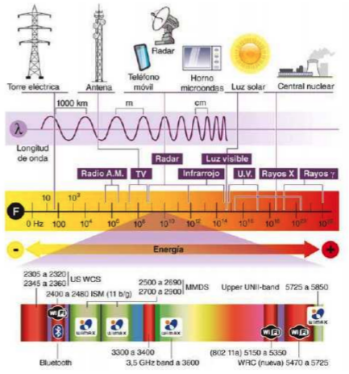

Medios no guiados¶
Los medios no guiados transportan ondas electromagnéticas sin conductor físico: la señal se emite mediante una antena y se propaga por el aire. Son la base del Wi‑Fi, el Bluetooth, la telefonía móvil y los radioenlaces.
Frente a los medios guiados presentan cuatro diferencias que conviene tener siempre presentes:
| Característica | Qué implica |
|---|---|
| Medio compartido | Todos los equipos de la zona que usan la misma frecuencia se reparten el aire; a más usuarios, menos velocidad para cada uno |
| Atenuación y obstáculos | La señal se debilita con la distancia y al atravesar paredes, cristales o estructuras metálicas |
| Seguridad | La señal llega a cualquiera dentro del alcance, por lo que el cifrado es obligatorio |
| Regulación | No se puede emitir en cualquier frecuencia ni con cualquier potencia: el espectro está regulado |
El espectro y las bandas de frecuencia¶
Las bandas de frecuencia funcionan como los carriles de una autopista: cada tecnología tiene asignado el suyo para no estorbar a las demás. Si todas emitieran en la misma frecuencia, se interferirían entre sí y ninguna funcionaría.


Bandas que usamos en redes:
| Banda | Frecuencias | Uso habitual |
|---|---|---|
| VHF | 30 – 300 MHz | Radio FM |
| UHF | 300 MHz – 3 GHz | TDT, telefonía móvil, banda de 2,4 GHz |
| SHF | 3 – 30 GHz | Wi‑Fi de 5 y 6 GHz, radioenlaces, TV por satélite |
| Infrarrojo | ~300 GHz – 400 THz | Mandos a distancia, algún sistema domótico |
Bandas libres (ISM) y regulación¶
Las bandas ISM (industriales, científicas y médicas) son de uso libre: no hay que pagar licencia, basta con respetar la potencia máxima permitida. Por eso las usan las tecnologías de consumo.
| Banda ISM | Tecnologías |
|---|---|
| 2,4 GHz | Wi‑Fi, Bluetooth, Zigbee, mandos, microondas domésticos |
| 5 GHz | Wi‑Fi de alta velocidad |
| 6 GHz | Wi‑Fi 6E y Wi‑Fi 7 |
| 868 MHz | IoT en Europa (Zigbee, LoRa) |
Uso libre no significa sin normas
En España, la atribución de bandas se recoge en el Cuadro Nacional de Atribución de Frecuencias (CNAF), publicado por el ministerio competente (consulta del CNAF). En Wi‑Fi de 2,4 GHz la potencia máxima permitida es de 100 mW (20 dBm) de PIRE. Además, la asignación varía entre países: un equipo comprado fuera de la UE puede emitir en canales no permitidos aquí.
Por qué la banda ISM de 2,4 GHz se satura
Es la banda libre más antigua y en ella conviven Wi‑Fi, Bluetooth, Zigbee, mandos, alarmas… y las fugas de los hornos microondas, que trabajan en torno a 2,45 GHz. Es la razón principal por la que el Wi‑Fi doméstico va mal en horas punta.
Cómo se propaga la señal¶
Tres ideas para entender cualquier problema de cobertura:
- A mayor frecuencia, más velocidad pero menos alcance. Los 2,4 GHz llegan más lejos y atraviesan mejor las paredes; los 5 y 6 GHz ofrecen más velocidad y menos interferencias, pero con menor penetración.
- Los obstáculos atenúan. Un tabique resta poco, un muro de hormigón o un armario metálico pueden dejar una zona sin cobertura. El metal y el agua son especialmente malos: por eso un AP dentro de un armario de comunicaciones cerrado apenas da señal.
- La señal rebota (multitrayecto). Llega al receptor por varios caminos y con distinto retardo. Tecnologías como MIMO aprovechan estos rebotes usando varias antenas a la vez.
La calidad se mide con el nivel de señal recibida, en dBm: valores en torno a −50 dBm son excelentes, −70 dBm aceptables y por debajo de −80 dBm la conexión es inestable.
Estándares inalámbricos¶
Los estándares de redes inalámbricas los desarrolla el grupo IEEE 802, organizados según el alcance de la red:
| Alcance | Grupo | Tecnología |
|---|---|---|
| WPAN (personal, metros) | IEEE 802.15 | Bluetooth, Zigbee |
| WLAN (local, edificio) | IEEE 802.11 | Wi‑Fi |
| WMAN (metropolitana, ciudad) | IEEE 802.16 | WiMAX |
| WWAN (amplia, país) | — | Redes móviles 4G y 5G |
Las redes móviles no son IEEE
Aunque a veces se cite el estándar IEEE 802.20, las redes móviles actuales (3G, 4G y 5G) las define el 3GPP, no el IEEE.
Redes WPAN (IEEE 802.15)¶
Bluetooth (IEEE 802.15.1)¶
Conecta dispositivos personales a corta distancia: auriculares, ratones, teclados, altavoces, pulseras de actividad o el manos libres del coche.
Características:
- Alcance según la clase de potencia: unos 10 m en la clase 2, la de móviles y auriculares; hasta 100 m en la clase 1.
- Banda de 2,4 GHz, compartida con el Wi‑Fi.
- Emparejamiento (pairing) entre dos dispositivos, con PIN o confirmación.
- Dos variantes: Bluetooth Classic (BR/EDR), para audio y transferencia continua, y BLE (Bluetooth Low Energy), de consumo mínimo, para wearables y sensores IoT.
| Versión | Año | Novedad principal |
|---|---|---|
| 1.x | 1999 | Primeras versiones, 1 Mbps |
| 2.0 + EDR | 2004 | 3 Mbps |
| 3.0 + HS | 2009 | Transferencias rápidas apoyándose en Wi‑Fi |
| 4.0 | 2010 | Aparece BLE: wearables e IoT |
| 5.x | 2016 en adelante | Más alcance y velocidad en BLE, audio LE |
Zigbee (IEEE 802.15.4)¶
Redes de sensores y domótica: poca velocidad, muy bajo consumo y topología en malla, en la que cada nodo reenvía los mensajes de los demás para ampliar la cobertura. Se usa en sensores de puertas, termostatos e iluminación inteligente.
NFC¶
Comunicación a muy corta distancia (unos 4 cm): pagos con móvil, tarjetas de transporte, control de accesos y etiquetas inteligentes. Su seguridad se basa precisamente en esa distancia mínima, que obliga a aproximar físicamente los dispositivos.
Corrección frecuente
NFC no pertenece al 802.15.3. Está definido por las normas ISO/IEC 14443 e ISO/IEC 18092, y trabaja en 13,56 MHz. El grupo IEEE 802.15.3 corresponde a WPAN de alta velocidad (UWB), poco relevante en SMR.
Wi‑Fi (IEEE 802.11)¶
Es la tecnología inalámbrica que instalarás y configurarás en tu trabajo, así que es la parte central del apartado.
Elementos de una red Wi‑Fi¶
| Elemento | Función |
|---|---|
| Punto de acceso (AP) | Emite la red y conecta los clientes al cableado; suele alimentarse por PoE |
| SSID | El nombre visible de la red |
| BSSID | La dirección MAC del AP, que identifica cada punto de acceso |
| Cliente | Portátil, móvil, impresora… con adaptador Wi‑Fi |
| Controlador / sistema mesh | Gestiona varios AP con el mismo SSID y facilita el roaming entre ellos |
Modos de funcionamiento:
- Infraestructura: todos los clientes se conectan a través de un AP. Es el modo normal.
- Ad hoc / Wi‑Fi Direct: dos equipos se conectan entre sí sin AP (compartir pantalla, imprimir directamente).
Estándares Wi‑Fi¶
| Estándar | Nombre comercial | Año | Banda | Velocidad máxima teórica |
|---|---|---|---|---|
| 802.11g | — | 2003 | 2,4 GHz | 54 Mbps |
| 802.11n | Wi‑Fi 4 | 2009 | 2,4 y 5 GHz | 600 Mbps (MIMO) |
| 802.11ac | Wi‑Fi 5 | 2013 | 5 GHz | Varios Gbps (MU‑MIMO) |
| 802.11ax | Wi‑Fi 6 / 6E | 2019 | 2,4, 5 y 6 GHz | Hasta 9,6 Gbps (OFDMA) |
| 802.11be | Wi‑Fi 7 | 2024 | 2,4, 5 y 6 GHz | Decenas de Gbps (Multi‑Link) |
Velocidad teórica ≠ velocidad real
Las cifras de la tabla son máximos de laboratorio, sumando todos los flujos del AP. En un aula, esa velocidad se reparte entre todos los clientes y se reduce por la distancia, los obstáculos y las redes vecinas. Una red Wi‑Fi 6 que anuncia 9,6 Gbps puede dar 200 Mbps reales por equipo, y seguir siendo correcta.
Lo importante de las versiones recientes no es la velocidad máxima, sino que gestionan mejor muchos clientes a la vez (OFDMA y MU‑MIMO), que es exactamente el problema de un aula con treinta portátiles.
Canales y solapamiento¶
Cada banda se divide en canales. En 2,4 GHz hay canales del 1 al 13, pero son tan anchos que se solapan entre sí: solo 1, 6 y 11 no se pisan.
- Si dos AP cercanos usan canales solapados (por ejemplo, el 3 y el 5), se interfieren y ambos van peor.
- En la banda de 5 GHz hay muchos más canales sin solapamiento, aunque algunos exigen DFS: el AP debe liberar el canal si detecta un radar.
Seguridad¶
| Protocolo | Valoración |
|---|---|
| WEP | Roto desde hace años, se descifra en minutos. No usar |
| WPA / TKIP | Obsoleto |
| WPA2‑PSK (AES) | Mínimo aceptable hoy |
| WPA3 | Recomendado; mejora el cifrado y protege contra ataques de diccionario |
| WPA2/WPA3‑Enterprise | Con usuario y contraseña individuales mediante RADIUS; lo habitual en centros educativos y empresas |
Falsas medidas de seguridad
- Ocultar el SSID no protege: la red sigue siendo detectable y los clientes la delatan al buscarla.
- El filtrado por MAC se salta fácilmente, porque una MAC se puede clonar.
- WPS con PIN es vulnerable por diseño: conviene desactivarlo.
Lo que realmente protege es WPA2/WPA3 con una contraseña larga, cambiar las credenciales de administración del AP y mantener el firmware actualizado. Añade una red de invitados aislada para visitantes.
WiMAX (IEEE 802.16)¶
Tecnología de área metropolitana para dar acceso a Internet de banda ancha a través de antenas, con alcances de decenas de kilómetros. Se concibió para llevar conexión a zonas rurales sin cobertura de cable.
Hoy tiene un valor sobre todo histórico: su papel lo han ocupado el 4G y el 5G fijo (FWA) y los enlaces inalámbricos de los operadores locales. Conviene conocer la idea, no memorizar la evolución de sus subestándares.
Redes móviles (WWAN)¶
| Generación | Época | Aportación |
|---|---|---|
| 1G | Años 80 | Analógica, solo voz |
| 2G | Años 90 | Digital: voz y SMS (GSM) |
| 3G | 2003 | Internet móvil |
| 4G (LTE) | 2009 | Banda ancha móvil, todo sobre IP |
| 5G | 2020 en adelante | Gbps, latencia muy baja y gran densidad de dispositivos (IoT) |
En redes locales, estas tecnologías aparecen sobre todo como acceso de respaldo: un router 4G/5G que mantiene la conexión de una oficina si cae la fibra, o que da servicio en ubicaciones temporales.
Buenas prácticas al desplegar Wi‑Fi¶
- Colocar los AP en el techo y en zonas despejadas, nunca dentro de armarios metálicos.
- Varios AP con menos potencia cubren mejor que uno solo a máxima potencia.
- Planificar los canales (1, 6 y 11 en 2,4 GHz) y aprovechar la banda de 5 GHz en aulas con muchos equipos.
- Alimentar los AP por PoE para no depender de enchufes.
- Usar el mismo SSID en todos los AP para permitir el roaming.
- Proteger con WPA2/WPA3 y separar la red de invitados.
Actividades¶
-
AC 216. (RA2 / CE2a, CE2c / IC1 / 3p). Clasifica estas tecnologías según su alcance (WPAN, WLAN, WMAN o WWAN) e indica la banda de frecuencia en la que trabajan y un uso real de cada una: Bluetooth, Wi‑Fi 6, 5G, Zigbee, NFC y WiMAX. Añade una fila más con una tecnología guiada y explica en dos líneas qué ventaja aporta frente a todas las anteriores.
-
AC 217. (RA2 / CE2c, CE2d / IC1 / 3p). En el aula se va a instalar un punto de acceso nuevo. Un análisis del entorno detecta estas redes vecinas en 2,4 GHz:
Red vecina Canal Nivel AULA‑2 1 −52 dBm SECRETARIA 6 −61 dBm WIFI_VECINO 11 −78 dBm TALLER 3 −55 dBm - a) ¿Qué canal elegirías para el AP nuevo y por qué? ¿Qué problema tiene la red TALLER?
- b) ¿Por qué solo se consideran "buenos" los canales 1, 6 y 11 en esta banda?
- c) Decide la banda (2,4 o 5 GHz) más adecuada en cada caso, justificándolo: aula con 30 portátiles trabajando a la vez; almacén grande y diáfano con lectores de códigos de barras; despacho separado del AP por dos muros de hormigón.
-
AC 218. (RA2 / CE2d, CE2e / IC1 / 3p). Un cliente te enseña la configuración de su router:
SSID: (oculto) Seguridad: WEP 128 bits Contraseña Wi-Fi: 12345678 WPS: activado (PIN) Filtrado MAC: activado Usuario admin del router: admin / admin Firmware: versión de 2016 Red de invitados: no configurada- a) Señala todos los problemas de seguridad y ordénalos de más a menos grave.
- b) Propón la configuración correcta para cada punto.
- c) Explica en tres líneas por qué ocultar el SSID y filtrar por MAC no son medidas de seguridad reales.
-
AC 219. (RA2 // CE2b, CE2d, CE2e / IC1 / 3p). La idea es hacerla sin apuntes ni actividades, es una actividad de síntesis.
-
Parte 1. Despliegue. Una academia ocupa una planta de 40 × 15 m con seis aulas, un pasillo central y una sala de profesores. Indica:
- a) Cuántos puntos de acceso instalarías aproximadamente y dónde los colocarías.
- b) Cómo los alimentarías y cómo los conectarías a la red cableada.
- c) Qué SSID y qué canales configurarías, y por qué no conviene poner un único AP a máxima potencia.
-
Parte 2. Diagnóstico. Indica causa probable y solución:
- d) La conexión Wi‑Fi de la cafetería se corta todos los días a la hora del almuerzo, justo cuando se usa el microondas.
- e) Un AP instalado dentro del armario de comunicaciones metálico y cerrado apenas da cobertura en el aula contigua.
- f) Un portátil situado a 3 m del PA navega bien, pero otro al fondo del aula, con −82 dBm, va muy lento y pierde la conexión.
- g) La red anuncia Wi‑Fi 6 con 9,6 Gbps, pero al medir con 25 alumnos conectados cada uno obtiene menos de 30 Mbps. El cliente cree que le han vendido un equipo defectuoso.
-